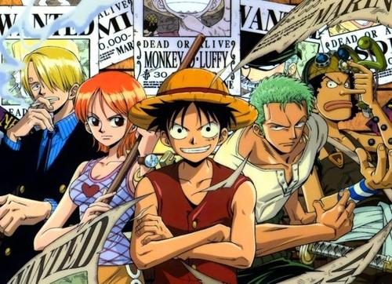
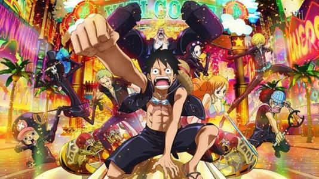
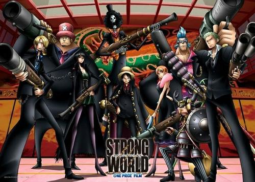
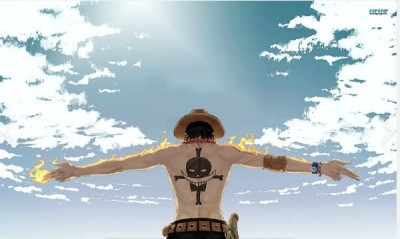

海贼王
《ONE PIECE》（日语：ONE PIECE／ワンピース；
中文译名：海贼王、航海王），是日本漫画家尾田荣一郎创作的少年漫画，
自1997年7月22日起在集英社旗下杂志《周刊少年Jump》连载、同年12月发行第一册单行本，
至今已出版90余册单行本。
作品以虚构的“大海贼时代”为故事舞台，描述海贼蒙奇·D·路飞想要得到“ONE
PIECE”（一个大秘宝）和成为“海贼王”为梦想而出海向“伟大的航道”航行的海洋冒险故事。
剧情大纲
生存之海 超新星篇
-
東海篇：蒙奇·D·路飞童年时受到海贼“红发”杰克斯的启蒙，自小就立志要成为“海贼王”。17岁时他出海之后，接续遇见了海贼猎人罗罗亚·佐罗、航海士奈美、狙击手撒谎布、厨师文斯莫克·山智并结为伙伴。
-
前往偉大航道篇:草帽海贼团来到偉大航道、遇到卧底在秘密犯罪组织巴洛克华克的阿拉巴斯坦王国公主奈菲特·薇薇，路飞决定帮助这位公主。
-
空岛篇：离开阿拉巴斯坦王国之后，草帽海贼团撞见一艘从天而降的大船，同时纪录指针竟然向上指向天空。对空岛产生兴趣的路飞靠着上升海流前往空岛。艾尼路最终被路飞击败，战争也终止。
- 弗克西海贼团篇: 草帽海贼团遇见专门以Davy Back
-
Fight游戏抢夺其它海贼团船员的“银狐”弗克西，两个海贼团展开争夺船员的竞技比赛。
-
水之七岛篇:为修缮伤痕累累的前进梅利号，草帽海贼团来到以造船业闻名的水之七岛，却得知梅莉号已经无法修复的消息，撒谎布又惨败给拆船流氓弗兰奇。
-
艾尼爱斯大厅篇:草帽海贼团前往司法岛救回罗宾，与世界政府底下的CP9部队全面对决，最后救回罗宾，撒谎布也回到团里。
-
草帽海贼团踏入魔幻的三桅帆船地带，遇见神秘的骷髅人布鲁克，并进入王下七武海月光·摩利亚所布下的陷阱。最后路飞击败了摩利亚，布鲁克也以音乐家的身份加入草帽海贼团。
-
香波地诸岛:遇到海军大将黄猿、战桃丸以及和平主义者的围捕，最后巴索罗谬·大熊利用果实能力帮助草帽海贼团逃脱，把各个船员传送至不同岛屿。
-
女人岛篇:被击飞至亚马逊百合的路飞遇见王下七武海的“海贼女帝”波尔·汉库珂，被女帝俘虏后又释放，得知自己的兄长“火拳”波特夹斯·D·艾斯要被处决。
-
因佩尔篇:路飞在因佩尔遇见过去的敌人及王下七武海的“海侠”甚平，众人为达成各自目的，分别先后集结组成联盟后展开越狱行动，最后路飞来到处刑的场所海军本部马林梵多。
-
马林梵多篇:路飞及越狱同伴、以及为了救艾斯而来的白胡子海贼团、海军、八位王下七武海展开了“顶上战争”。战争最后由“红发”杰克斯出面调停而收场，但遗憾的是艾斯和白胡子皆殒命于战场。
最后之海 新世界篇
-
鱼人岛篇:历经两年修行后重逢的草帽海贼团为了前往新世界，而出发迈向位于海底10,000米以下处的“鱼人岛”。他们遇到甚平并得知鱼人岛的悲剧历史，原本鱼人岛继承已故王妃的想法、渐渐地接近与人类和平共处的理想，但是由霍迪·琼斯所率领的新鱼人海贼团却粉碎了这个美梦。草帽海贼团挺身阻止霍迪所率领的“新鱼人海贼团”，并与白星公主为首的鱼人与人类之间开始建立新的羁绊。
-
班克禁区篇:草帽海贼团与新任王下七武海特拉法尔加·D·瓦鉄尔·罗相遇，路飞接受罗的提议，组成了“海贼同盟”，目标是“四皇”之一的“百兽”盖德。他们靠着这强力的同盟来对抗在班克禁区制造人工恶魔果实的凯撒·库朗。
-
德莱斯罗兹篇:草帽海贼团和罗潜入到唐吉诃德·多弗拉门戈治理下的王国“德莱斯罗兹”，与多弗拉门戈旗下人马展开对决，期间与革命军参谋总长兼路飞的义兄萨波重逢，在击败多弗拉门戈后，德莱斯罗兹的悲剧就此结束。而作为台面下引路人的多弗拉门戈的垮台，也使得世界局势开始出现大幅变化。
-
佐乌篇:路飞等人到佐乌国家与奈美等人会合，但此国家却已呈现溃灭状态。一行人追查发生在这个国家的秘密，却意外发现山智出身为杀手家族—杰尔马66。路飞一行人为了阻止其结婚，正在思考救回山智的方法时，意外得知了和之国光月一族的秘密。路飞等人得知这件惊人事实，于是将下一个击倒的目标锁定为四皇“百兽”盖德。路飞、佐罗与和之国光月一族及佐乌的住民为各自的目的分组团队。
- 圆蛋糕岛篇:路飞团队前往四皇“BIG
-
MOM”夏洛特·玲玲所在的“万国”蛋糕岛准备找回要结婚的山智。路飞等人理解山智与家族联姻的真正理由，再度和甚平相会，并与想要暗杀BIG
- MOM的火战车海贼团、
-
凯撒·库朗组成暂时联盟，成功破坏双方联姻婚礼，救出山智和其家族傑爾馬66。甚平为实践理念，正式宣布退出BIG
-
MOM旗下与辞别太阳海贼团，以掌舵手的身份加入草帽海贼团。在一行人达成目的后，逃出BIG
- MOM的领地，期间路飞与BIG
- MOM海贼团的夏洛特·卡塔克利展开激烈对决，在最后的对决中获胜。
-
世界会议篇:世界政府加盟国里作为代表的50个国家，再度前往“圣地”马力乔亚召开每4年一次的世界会议，商讨世界大局政策。
-
和之国篇:佐罗等人按锦卫门的要求伪装成和之国国民。另一方面，路飞等人先后抵达四皇“百兽”盖德驻扎的和之国。
草帽海贼团角色介绍
-
蒙奇·D·路飞:本作的主角，草帽海贼团船长兼草帽大船团首领，外号“草帽小子”、“第五位海上皇帝”，和之国化名浪人“路飞太郎”，目前悬赏金为15亿贝里。
-
罗罗亚·佐罗:草帽海贼团战斗员兼剑士，外号“海贼猎人”，和之国化名浪人“佐罗十郎”，目前悬赏金为3亿2,000万贝里。
-
奈美:草帽海贼团航海士，外号“小偷猫”，和之国化名女忍者“阿娜”，目前悬赏金为6,600万贝里。
-
撒谎布:草帽海贼团狙击手，外号“狙撃王”，和之国化名蛤蟆油小贩“骗人八”，目前悬赏金为2亿贝里。
-
文斯莫克·山智:草帽海贼团厨师，外号“黑脚”，和之国化名摊贩老板“香吉五郎”和“面条战士”，目前悬赏金为3亿3,000万贝里。
-
多尼多尼·乔巴:草帽海贼团船医，外号“超爱棉花糖的乔巴”，和之国化名武士“乔巴卫门”，目前悬赏金为100贝里。
-
妮古·罗宾:草帽海贼团考古学家，外号“恶魔之子”，和之国化名艺伎“阿宾”，目前悬赏金为1亿3,000万贝里。
-
弗兰奇:草帽海贼团船匠，外号“铁人”，和之国化名工匠“佛朗之介”，目前悬赏金为9,400万贝里。
-
布鲁克:草帽海贼团音乐家兼剑士，外号、“灵魂之王”，和之国化名灵魂“骨吉”，目前悬赏金为8,300万贝里。
- 甚平:草帽海贼团掌舵手，外号“海侠”，目前悬赏金为4亿3,800万贝里。
章节简介
| 巴奇一伙 | 35话-75话（动画46-47）全28话 外传2话 |
| 可比麦波奋斗日记 | 83-119话(动画68-69) 全30话 |
| 强高的冒险天国 | 126-172话 全37话 外传1话 |
| 小八的海底散步 | 八仔的海底散步 小八的孩子散步 182 -228话 全40话 |
| 瓦波尔的杂食万岁 | 236 - 262话 （动画778） 全23话 |
| 艾斯的黑胡子大搜查线 | 272 - 305话 全29话 |
| 涅槃在青海的随性生活 | 314 - 348话 全32话 |
| Ms.黄金周的作战名“遇见巴洛克” | 359 - 413话 全42话 外传1话 |
| 他们的现状 | 424 - 427话 486 - 490话 全7话 |
| 艾尼路的宇宙大作战 | 428 - 474话 全38话 |
| CP9的任务外报告 | 491 - 528话 全33话 |
| 山智之地狱来信你没事吧 | 543 - 544话 （动画419、510、514） 全2话 |
| 罗宾之我要动粗了 | 545 - 546话 （动画420、510、515） 全2话 |
| 弗兰奇之我这礼拜衰透了 | 548 - 549话（动画418、508、514） 全2话 |
| 撒谎布之独自一人就会死的病 | 550 - 551话 （动画420、507、515） 全2话 |
| 乔巴之我不是食物混蛋 | 552 - 554话 （动画419、510） 全2话 |
| 奈美之维莎报告 | 555 - 556话 （动画418、508、514） 全2话 |
| 布鲁克之一宿一裤的报恩 | 557 - 558话 （动画421、509、515） 全2话 |
| 佐罗之那些家伙在哪里真麻烦 | 559 - 560话 （动画421、509、515） 全2话 |
| 来自世界的甲板 | 613 - 668话 全48话 |
| 卡里布的新世界咳嘻嘻嘻嘻 | 674 - 731话 （动画921）全46话 |
| 海侠甚平一个人的旅行 | 751 - 785 话 全28话 |
| 悬赏5亿的男人 | 805 - 838话 全25话 |
| 上门草帽大船团故事 | 864话 - 919话 （动画885） 全46话 |
| 黑帮“班吉”的Oh my family | 948话 - 994话 全37话 |
照片




动漫
由东映制作并发行，至今已上映14部（含一部3D剧场版）。2000年至2008年间，固定于每年的3月档期上映一部剧场版。
之后《航海王电影：强者天下》（2009年）、《航海王电影：Z》（2012年）和《航海王电影：GOLD》（2016年），皆由原作者尾田荣一郎担任制作总指挥后，掀起传奇的革命，也不固定每年上映、大约三至四年上映一部剧场版，档期则分别延至年底和暑期，而《航海王电影：Z》成为《ONE PIECE》剧场版系列历代票房最高电影。
而《航海王：夺宝争霸战》（2019年）为电视动画20周年纪念作品，尾田仅担任监修一职。此外，官方也会不定期播出剧场版相关的人员访谈、原创动画等特别节目。